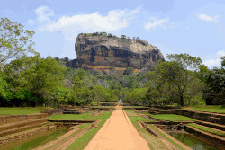
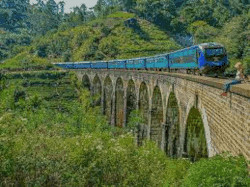
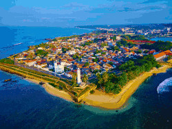
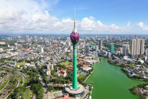
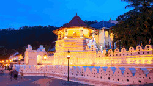
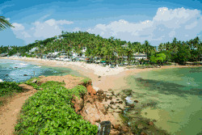

Sigirya
Sigiriya is a 5th century rock fortress in central Sri Lanka and a UNESCO world heritage site.
The location has the ruins of a royal citadel, gardens and ancient frescoes, which demonstrate the engineering and architectural success of ancient Sri Lanka.

Ella
Ella is a small town in the hill country of Sri Lanka, which boasts of scenic landscapes, tea plantations and cooler climate.
Natural attractions like Ella Rock and Nine Arch Bridge are common attractions in the area and visitors have a chance to explore the area in terms of sightseeing and nature.

Galle
Galle is an ancient coastral city in the southern part of Sri Lanka.
Galle Fort is a UNESCO heritage site constructed during the colonial era is a key attraction.
The city is the representation of the mixture of european architecture and local traditions with the historical and cultural importance.

Colombo
Colombo is the largest city in Sri Lanka, which is the commercial capital of the country.
It comprises a combination of modernization, colonialism and cultural heritage, and it is the economic and historical diversity of Sri Lanka.

Kandy
Kandy is an ancient city found in the central highlands of Sri Lanka and is reputed to be a significant cultural and religious hub.
It is the location of the Temple of the Sacred Tooth Relic, which is a UNESCO heritage site and a significant part of the Sri Lankan cultural heritage.

Mirissa
Mirissa is a coastal resort located in south Sri Lanka with beaches and sea creatures.
The region is famous for whale watching and consists a relaxed coastal atmosphere that is appealing to tourists.
{kind=link}
{kind=link}
{kind=link}
{kind=link}
{kind=link}
{kind=link}